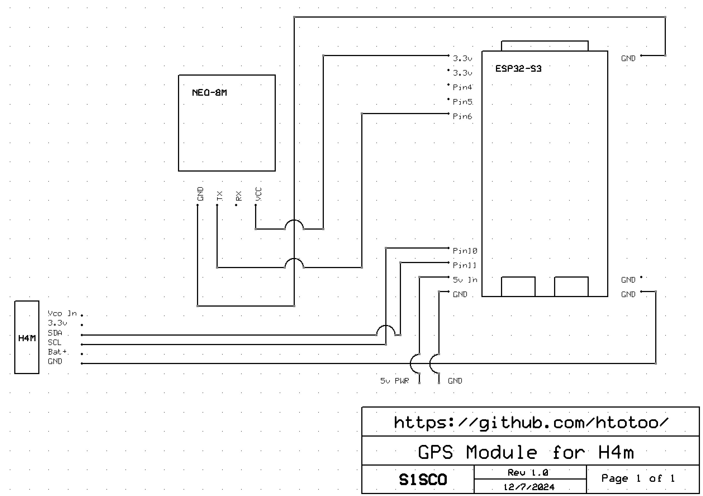
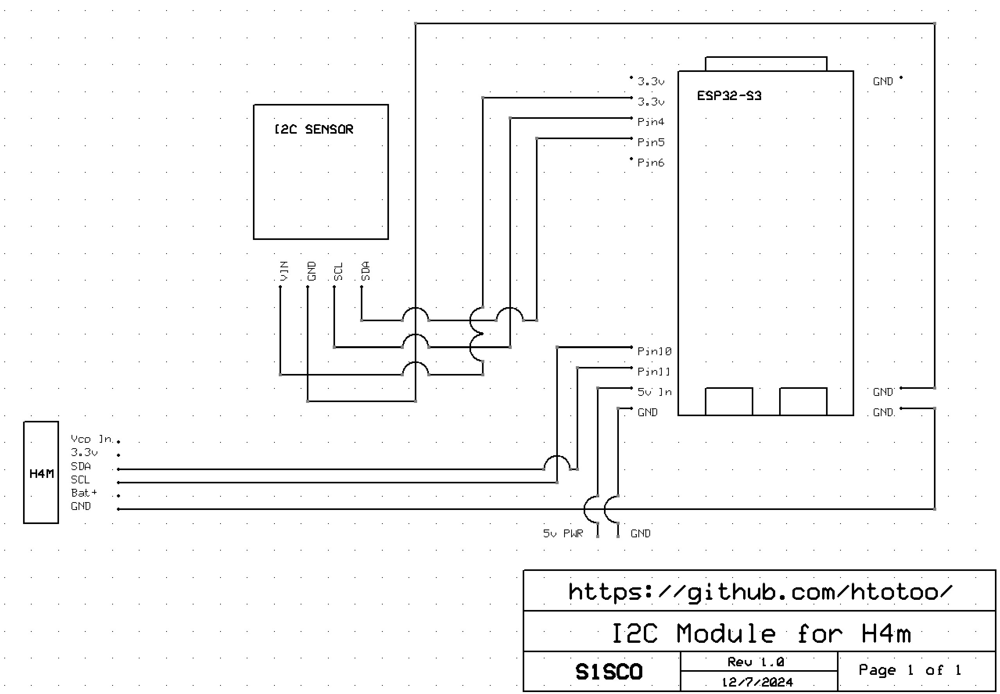
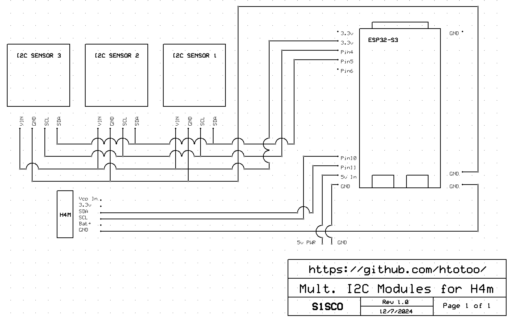
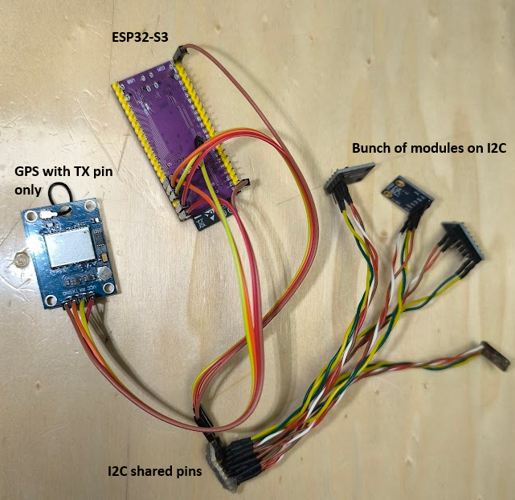

ESP32-S3 GPIO Add-On Schematics
ESP32 add-on board schematics. note: this is only useful for HackRF devices that have an GPIO/I2C port. (duh...)
another note: this is actively being developed, check out htotoo's ESP32 repo for more updates! All credit to the wonderful work he does. Their wiki is also here. Do keep in mind, as of 9/12/2024, the wiki is unfinished. You can contribute!
-
GPS Module Schematic
 -
I2C Module Schematic
 -
Multiple I2C Modules
 -
Built Example (w/ multiple I2C modules)
